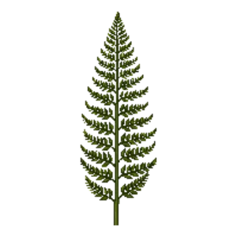

Royal Fern
Osmunda regalis

Royal Fern is a perennial for focal point, suited to full sun to partial shade and loam, acid soil or moist ground, flowering varies by climate.
| Type | Perennial |
|---|---|
| Mature height | 150 cm |
| Spread | 120 cm |
| Aspect | full sun to partial shade |
| Foliage | Deciduous |
| Hardiness | USDA 3a-9b, RHS H6 |
| Pollinator-friendly | No |
| Pet-safe | Yes |
Where to use it in a border
At around 150 cm, it sits best toward the back of a border, or on its own as a focal point with room around it. Give it about 120 cm of room to spread. It is hardy across USDA zones 3a to 9b and rated H6 by the RHS, so check it suits your area before planting.
It appears in our lists of shade, acid soil, wet soil, pet-safe plants.
Flowering through the year
JFMAMJJASOND
Worth knowing
- It copes with ground that stays wet, which most border plants will not.
- It tolerates acid soil but dislikes shallow chalk.
- It tolerates a shaded, north-facing spot.
Good companions
Plants that share its conditions and style, chosen to complement its place in the border:
- Allegheny Spurgeto edge in front
- Alumroot 'Palace Purple'to edge in front
- American Witch Hazelfor height behind it
- Anise/Blue Sageto flower when it does not
- Appalachian Sedgeto edge in front
- Atamasco Rain Lilyto edge in front
Garden styles
See Royal Fern set in a full border, with spacing and companions worked out for your own conditions, in Border Builder.